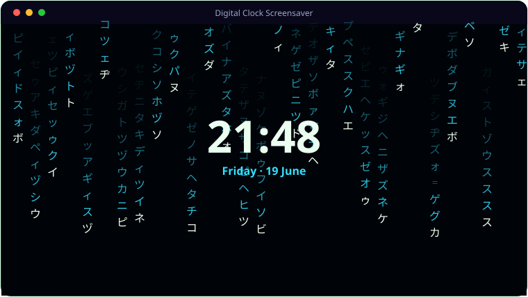

See It In Action
A look inside Digital Clock Screensaver.

What It Does
Everything Digital Clock Screensaver brings to the table.
🌧️
3D Matrix Rain
Perspective katakana, Latin and digit rain streams toward you behind the clock overlay.
🕰️
Full-Screen Clock
Time, day and date front and centre, in 24-hour or 12-hour format with optional seconds.
🎨
Eight Colour Modes
Cycle through hues or fix one of eight presets, with adjustable rain speed, density and panel opacity.
🔑
Password Protection
Optionally require a password to dismiss the screensaver.
⚙️
Live Settings
Press S while running to open settings without leaving the screensaver.
🪟
Proper Screensaver
Supports the Windows /s, /c and /p arguments and ships with an Inno Setup installer.
Get Ready
System requirements.
💻
Minimum
- OS: Windows 10 (64-bit) or Windows 11
- CPU: Dual-core, 2.0 GHz
- Memory: 4 GB RAM
- Graphics: Any DirectX 11 / integrated GPU
- Storage: 250 MB + space for your files
- Display: 1280×768 or higher
🚀
Recommended
- OS: Windows 11 (64-bit)
- CPU: Quad-core, 3.0 GHz
- Memory: 8 GB RAM
- Graphics: Dedicated GPU (optional)
- Storage: SSD with a few GB free
- Display: 1920×1080 or higher
Under the Hood
The details.
| Engine | Python 3.12 + Pygame + tkinter settings |
| Rain | 3D perspective katakana + Latin + digits |
| Clock | 12/24h, seconds, day, date |
| Options | 8 colour presets, speed/density, opacity, password |
| Platform | Windows 10 / 11 (.scr + installer + Store assets) |
Get Digital Clock Screensaver.
Matrix rain behind a big, configurable clock.
⬇ Download Digital Clock ScreensaverDigitalClock_Setup.exe / DigitalClock.scr · Free · Windows 10/11